The Western Landscapes Bundle
The Western Landscapes Bundle from Built by Josh Studio renders each of the 12 Western zodiac signs as a place instead of a figure. No rams, no lions, no scorpions — just the mythic environment each sign would inhabit, painted with oil-textured brushwork and cinematic depth. The result is 12 standalone wall pieces that work as a cohesive atmospheric set or as one-off statement prints.
Every landscape is delivered in three aspect ratios at print-ready high resolution (up to 6000 × 9000 pixels). 72 files in total — 12 designs × 3 ratios × 2 formats. Sold as one $7.99 bundle, not 12 separate listings.
Built by Josh Studio LLC, a Kansas-based independent creative studio, publishes this zodiac art under its own name. Every landscape is original work — concepted, generated, curated, and finalized by a single founder.
Why Landscape Zodiac Art Instead of Portraits
Traditional zodiac art gives you the figure: the ram, the bull, the twins. Landscape zodiac art gives you the world. The environment that figure would live in. The weather of their emotional geography. The place you would visit if you stepped inside their sign.
Landscapes work differently on a wall. A portrait draws the eye to a character; a landscape draws the eye into a space. For rooms that need depth, atmosphere, or cinematic scale, a landscape print earns its place where a portrait can feel too direct. The two series also pair well — a figure portrait of your sign alongside the landscape it inhabits.
The 12 Zodiac Landscapes
The Western Landscapes Collection is sold as a single bundle — all 12 mythic landscape designs in one $7.99 download. Click below to purchase the full Collection.
Scroll down to preview each of the 12 landscapes.
The Forge of Aries
A volcanic forge world where rivers of molten metal cut through obsidian ridges. Every surface glows with the heat of creation — the elemental home of the sign that begins the zodiac.
The Verdant Grove
A sunlit sanctuary deep in ancient woods. Moss-covered stone, golden hour light through the canopy, and the quiet weight of a place that has stood for centuries. Taurus in landscape form.
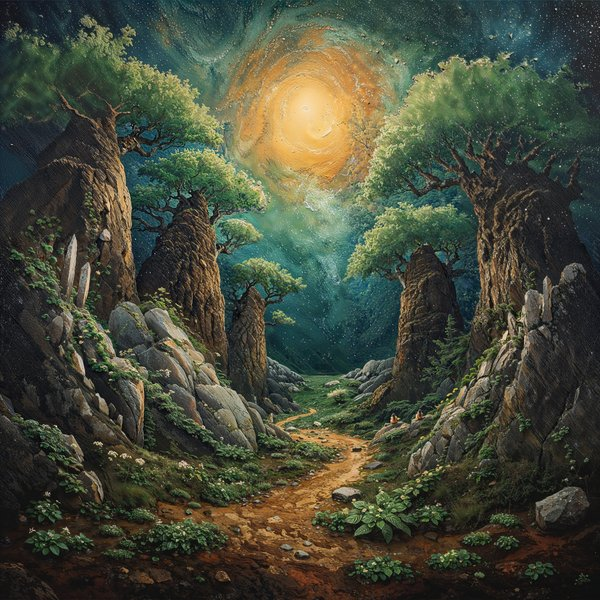
The Rift of Gemini
Two worlds split by a luminous rift — one side day, one side night, both real. A landscape designed around duality, reflection, and the Gemini refusal to choose a single truth.
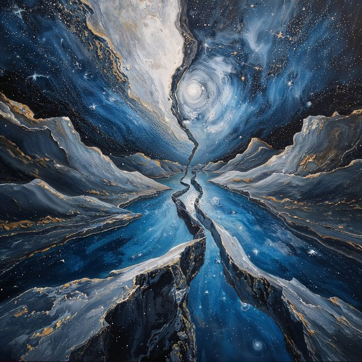
The Moonlit Lagoon
A silvered lagoon at full moon — still water, soft bioluminescence, and the hush of tides that only move when no one is watching. Cancer as emotional geography.
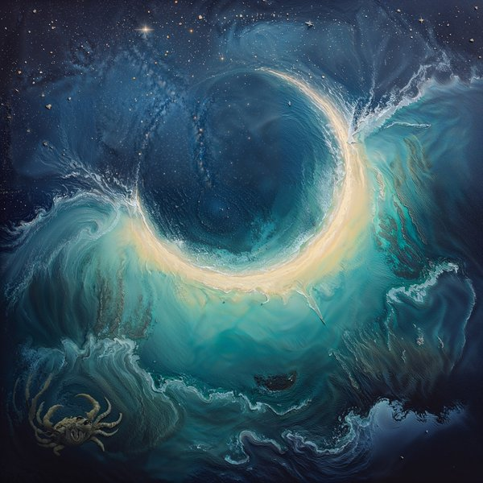
The Sunfire Expanse
A vast golden plain under a sun that never quite sets. Heat rises off the land, light catches every surface, and the whole horizon glows with Leo-scale presence. A landscape that performs.
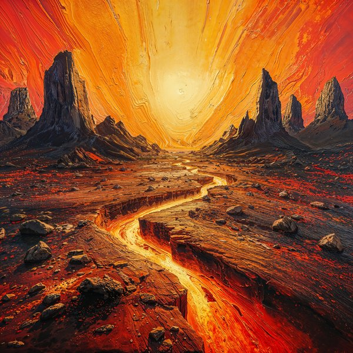
The Crystal Archive
A luminous library carved from crystal — every surface precise, every angle intentional. The Virgo landscape is a place that has been thought through. Order given a cathedral.
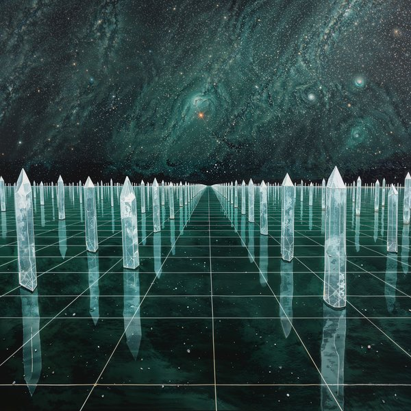
The Celestial Balance
A moonlit hall where enormous scales hang from the sky itself, never quite tilting. The Libra landscape holds all decisions in suspension — refined, symmetrical, eternally in balance.
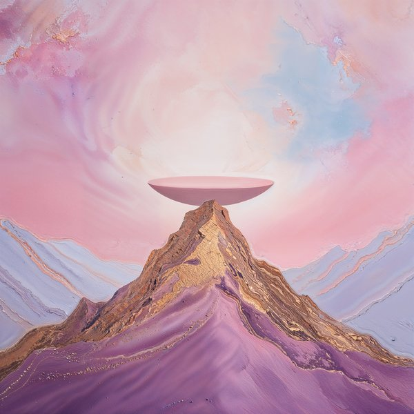
The Abyss of Scorpio
A deep-ocean void lit only by what stirs beneath it. Crimson pressure-glow, impossible depth, and the certainty that something patient is watching. Scorpio as place, not figure.
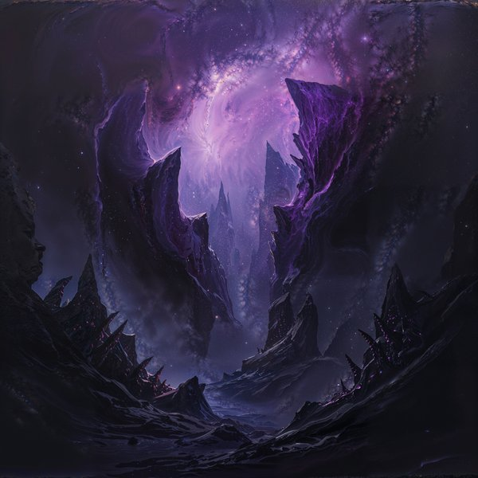
The Archer's Expanse
A horizon with no edge. The Sagittarius landscape is pure scope — open plains, open sky, the kind of view that exists to be aimed toward. A room-sized piece of cosmic wanderlust.
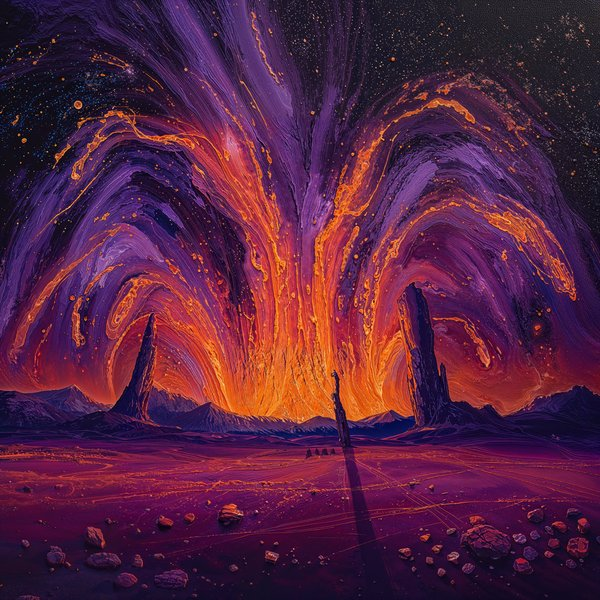
The Obsidian Peaks
Sheer black summits above the cloud line. Austere, ancient, and architecturally still. The Capricorn landscape is the altitude itself — a place that only exists if you're willing to climb.
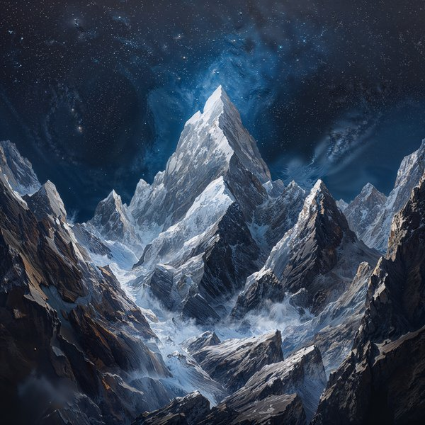
The Starfall Cascade
A waterfall made of falling stars. Electric, impossible, forward-leaning — an Aquarius landscape that treats physics as a suggestion and beauty as a given.
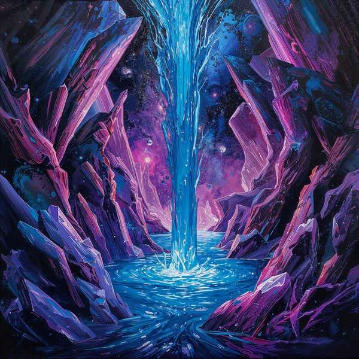
The Dreaming Tides
A luminous oceanic dreamscape where the line between water and sky has softened into the same color. The Pisces landscape is pure reverie — the place you end up when you stop trying to be anywhere.
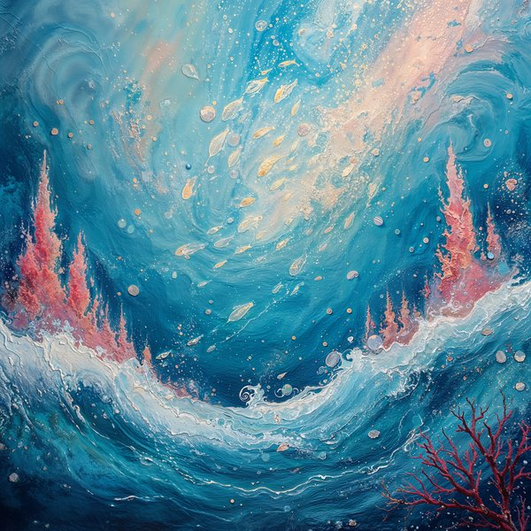
12 unique designs · 72 print-ready files (3 aspect ratios × 2 formats per design). One bundle, every Western zodiac landscape in oil-painted form.
Who Buys the Western Landscapes Bundle
This bundle is for buyers who want zodiac art with more atmosphere and less figure-drawing. They usually fall into one of these camps:
- Collectors who already own a figure-based zodiac print from the Western Signs Collection and want the complementary landscape for the same sign
- Decorators who prefer atmospheric wall art over portraits — especially for living rooms, bedrooms, and larger spaces
- Buyers who find zodiac symbolism meaningful but don't want a ram or lion on their wall
- Fans of oil-painted landscape art who happen to also care about astrology
- Gift shoppers looking for something more unusual than standard zodiac clip-art — the bundle gives you every sign at once for any recipient
- Couples or households matching multiple signs — landscapes pair well as sets where portraits would compete
What's Included With the Bundle
The Western Landscapes Bundle is a complete digital download. After purchase, you get instant access to 72 image files organized by sign — no shipping, no waiting, no physical product mailed to you.
Each landscape design is delivered in three aspect ratios: 1:1 square (4800 × 4800 pixels), 4:5 portrait (4800 × 6000 pixels), and 2:3 portrait (6000 × 9000 pixels). Every size is provided in both PNG (lossless) and JPG (92% quality) formats. All files are saved at 300 DPI in standard sRGB color space — the industry standard for high-quality print reproduction across home printers, professional print shops, and print-on-demand services. The 2:3 portrait files crop cleanly to wider panoramic frames when you want the full horizontal scope.
The bundle also includes two PDF documents: a License Agreement & Terms of Use covering personal use, print-on-demand rights, and the 100-print-per-design cap, and a Print Guide & User Manual explaining file structure, recommended print sizes, paper selection, and troubleshooting tips. Both are tailored to the Western Landscapes Collection.
Pricing is $7.99 for the full bundle. One-time payment, instant download, secure checkout via Lemon Squeezy.
Licensing & Print-on-Demand Rights
The Western Landscapes Bundle ships with a clear, plain-English license — not a vague "for personal use" disclaimer.
You may
- Print and display the files in your own home or personal space
- Sell physical print-on-demand products (framed prints, posters, canvases, mugs, t-shirts, phone cases, etc.) made from the designs, up to a cumulative cap of 100 physical units per individual design across all formats, vendors, and time periods combined
- Use the prints as personal or commercial gifts within the same 100-print-per-design cap
You may not
- Redistribute, share, sell, or transmit the digital files themselves to anyone, in any format
- Use the files as input, training data, or seed images for any AI model
- Mint or tokenize the files as NFTs or other blockchain assets
- Exceed the 100-print-per-design cap (it does not reset and is cumulative across all channels)
- Claim authorship of the designs or register them as your own intellectual property
AI disclosure: The designs in the bundle were created using a combination of human creative direction and AI image generation tools, including Leonardo.ai, with selection, curation, refinement, and final arrangement by Built by Josh Studio LLC. This is disclosed in full in the license agreement.
Need more than 100 prints per design? Extended commercial licensing is available — contact josh@builtbyjoshstudio.com before exceeding the cap.
Read the Western Landscapes License (PDF) → Read the Western Landscapes Print Guide (PDF) →